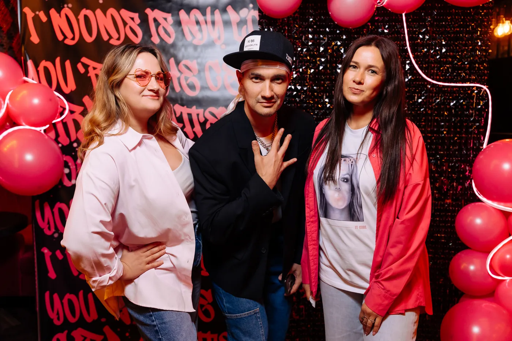
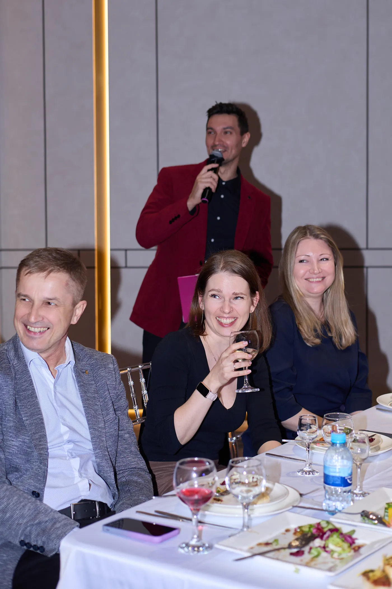

Истории близких
Семья, друзья и коллеги помогают собрать материал с разными взглядами на героя события.
Юбилеи и частные события
Истории семьи, друзей и коллег, музыка и персональные моменты, которые узнают и чувствуют гости.

Подготовка
До события собираю характерные эпизоды, важные имена и детали от семьи, друзей и коллег. Из них появляется программа, в которой герой вечера действительно узнаёт себя.
Семья, друзья и коллеги помогают собрать материал с разными взглядами на героя события.
Ритм и форматы участия меняются так, чтобы в вечере было место каждому поколению.
Песня, вокальный фрагмент или импровизация могут продолжить конкретную историю.
Работаю с живыми реакциями, сохраняя уважение к человеку и его гостям.
Поздравления и воспоминания становятся частью общей драматургии, а не отдельным списком.
Торжественные и лёгкие эпизоды сменяют друг друга в комфортном ритме.
Живой вечер
Торжественные слова, музыка, юмор и общение соединяются в один вечер — с вниманием к состоянию героя события и гостей.

Прямой контакт
Напишите дату, город, формат и количество гостей. Я отвечу по занятости и задам несколько вопросов о герое вечера.